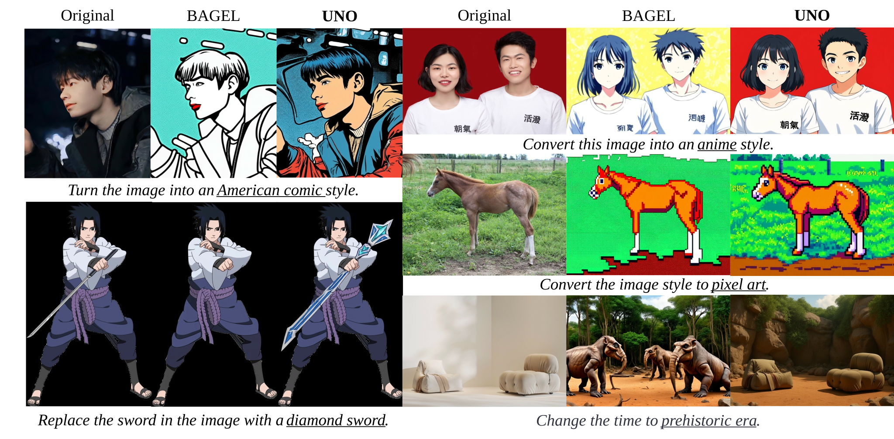
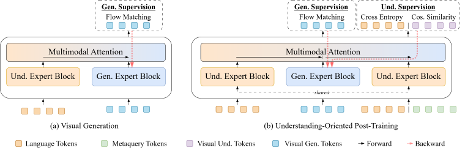
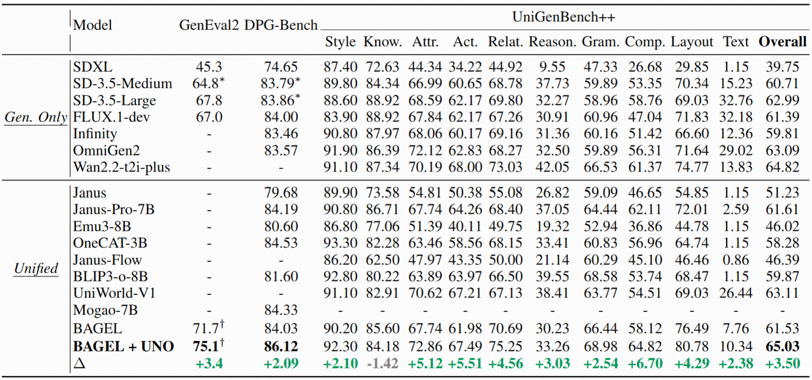
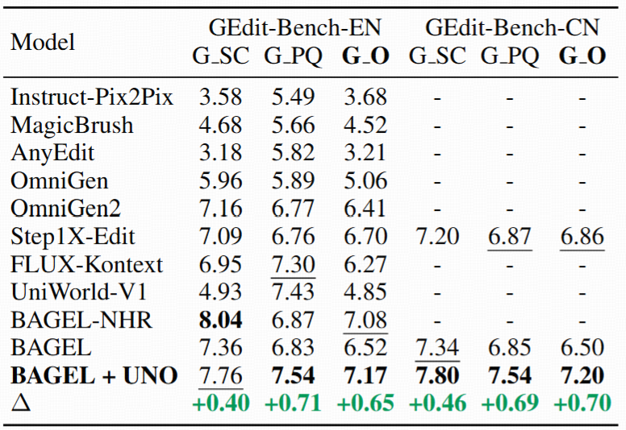

Abstract
Unified multimodal models are envisioned to bridge the gap between understanding and generation. Yet, to achieve competitive performance, state-of-the-art models adopt largely decoupled understanding and generation components. This design, while effective for individual tasks, weakens the connection required for mutual enhancement, leaving the potential synergy empirically uncertain.
We propose to explicitly restore this synergy by introducing Understanding-Oriented Post-Training (UNO), a lightweight framework that treats understanding not only as a distinct task, but also a supervisory signal to steer generative representations. By incorporating objectives that encode semantic abstraction (captioning) and structural details (visual regression), we enable effective gradient flow from understanding to generation. Extensive experiments on image generation and editing demonstrate that understanding can serve as an effective catalyst for generation.
Approach
Enhanced Representational Capacity

Conceptual illustration of training process and backward gradient flow
(a) Generation Training: Current generative training in unified models encode conditions using the understanding expert and transfers information uni-directionally via conditioning to the generative expert, where the outputs are optimized using low-level flow matching objectives. Generation experts receive gradients solely from generative targets, while signals from the understanding pathway remain isolated.
(b) Understanding-Oriented Post-Training: Understanding-oriented post-training jointly supervises the sample with generation and understanding objectives. Specifically, the understanding expert conditions on the noised generative representations, and jointly conducts (i) language supervision through captioning and (ii) visual understanding supervision by using metaquery tokens to predict subsequent understanding tokens. This enables generation blocks to receive gradients from both pathways, enabling strong understanding supervision to directly shape generative representations.
Main Results

Quantitative generation results

Quantitative editing results
Gallery


BibTeX
TODO